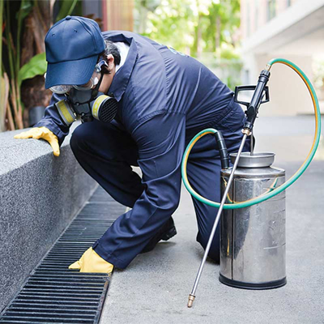

Serviços
Desentupimento
Desentupimento é realizado através da máquina que utiliza um cabo de aço, desentupimento de cano, pia,
vaso sanitário, ralo, caixa de gordura ou esgoto entupido etc.

Dedetização
Dedetizadora de insetos voadores e rasteiros. Dispomos de atenção especial que deve ser dada às
áreas de descarte de lixo, que comumente são as grandes responsáveis por infestações de vetores. Inspeção ampla
para a localização dos focos de pernilongos ou moscas para início dos trabalhos. Trabalhamos com controle integrado
de pragas urbanas utilizando sistemas de dedetização aplicada a abelhas e marimbondos.Desratização de rato de porão,
rato
de telhado, camundongo e ratazana com processo de PPI e porta iscas para exterminar ratos do tipo ratazana, rato de
telhado,
porão e camundongo.
Desratização
A Dedetizadora utiliza para desratização, iscas parafinadas para combater um animal superior
adaptado
em ambientes. Para conviver próximo aos seres humanos o rato é capaz de adaptar-se ao meio ambiente, causando
doenças e
prejuízos ao patrimônio .Descupinização de cupim de solo e cupim de madeira aplicada com barreira química contra
cupim de
madeira e solo. Nos locais tratados são insetos que observados a olho nu note-se que posterior a esta ação devemos
tomar
cuidado de não permanecer no local quando for fechado e com pouca ventilação, durante um período de 24 horas.
Dedetizadora
recomenda que pessoas muito sensíveis ou alérgicas não permaneçam no local por 48 horas.
Limpeza de caixa d'agua
É muito importante mantermos a qualidade da água que consumimos em casa. Essa água deve estar livre de impurezas e contaminação.
A água vem da rua para as nossas casas e fica armazenada em nossas caixas d’água para ser usada no nosso dia através de torneiras,
filtros, chuveiro e mangueiras. A limpeza de caixa d’água periodicamente é de extrema importância para a saúde dos moradores.
Limpeza de calhas
Higienizar as calhas é, sem dúvida nenhuma, um dos processos mais importantes da manutenção da residência – isso porque, quando a calha está limpa, ela
recolhe da maneira correta a água da chuva que escorre sobre o telhado, evitando problemas de infiltração e umidade excessiva.